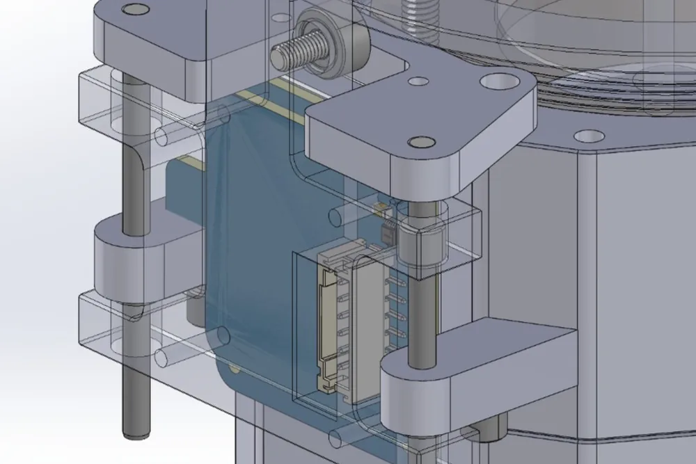
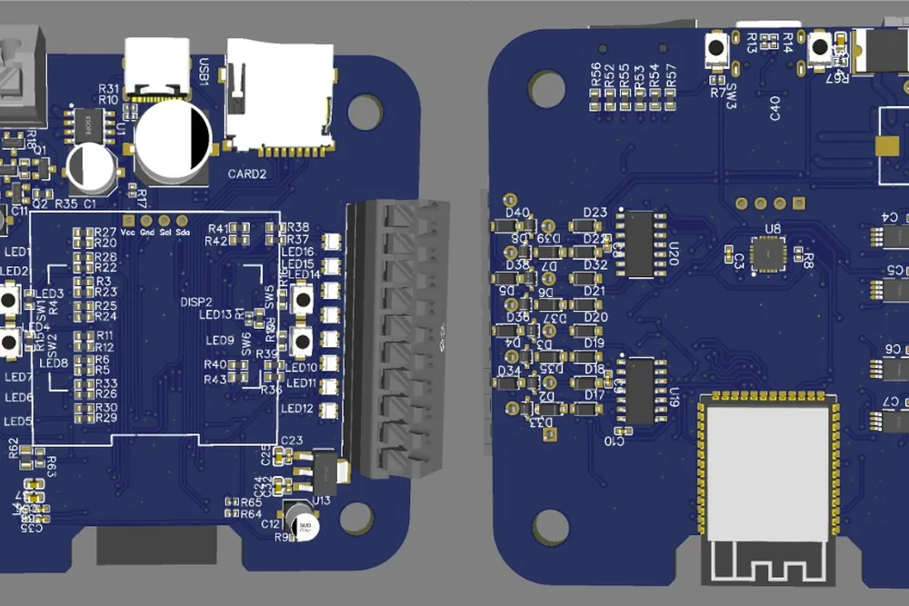
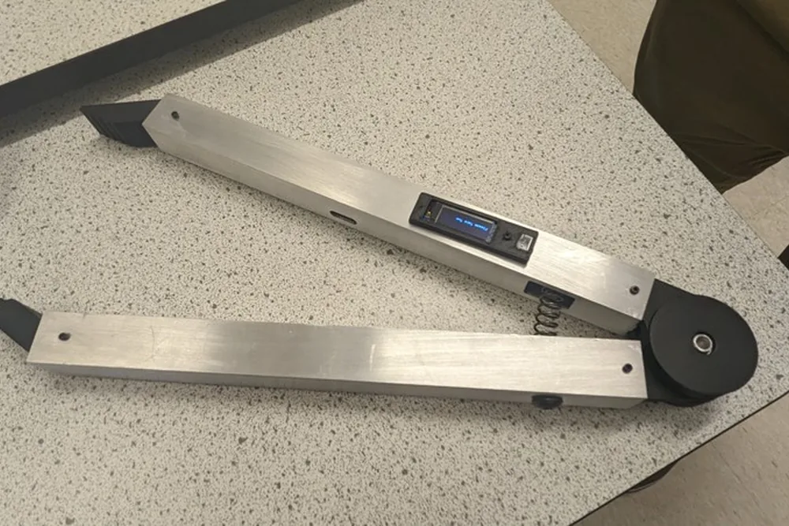
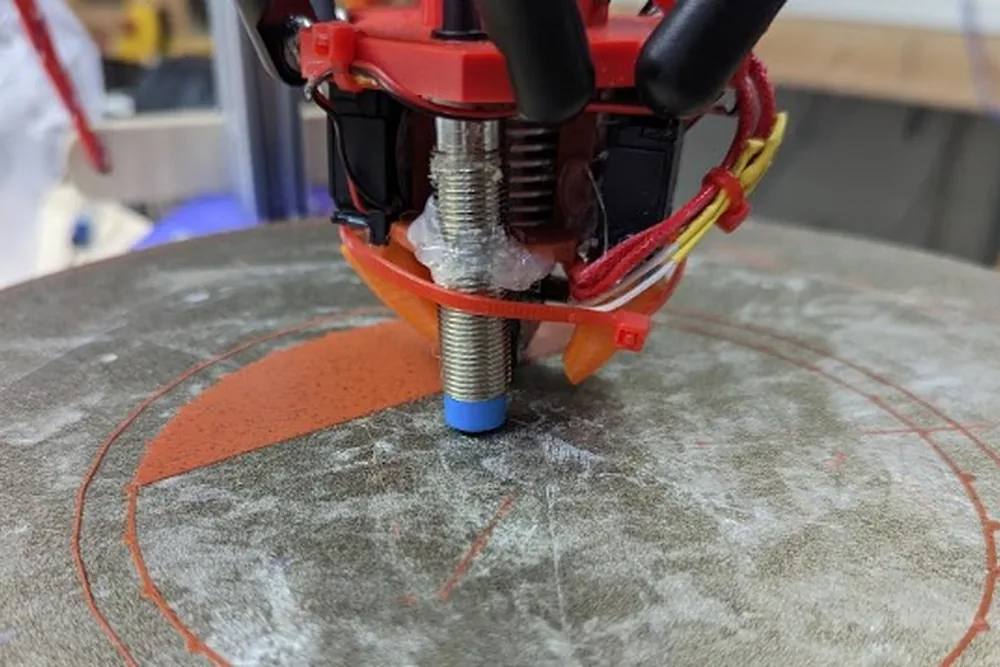
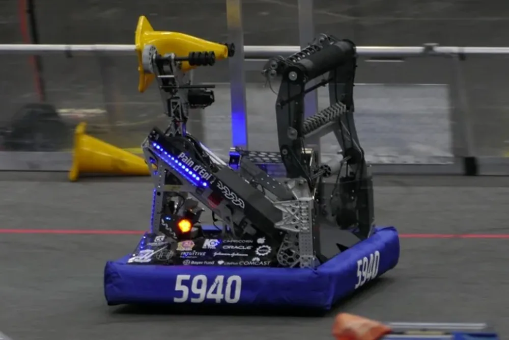
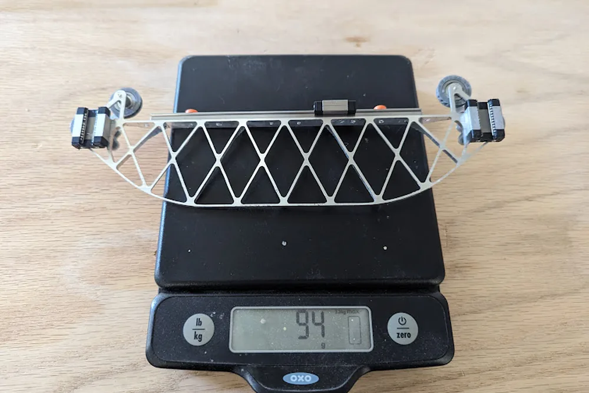
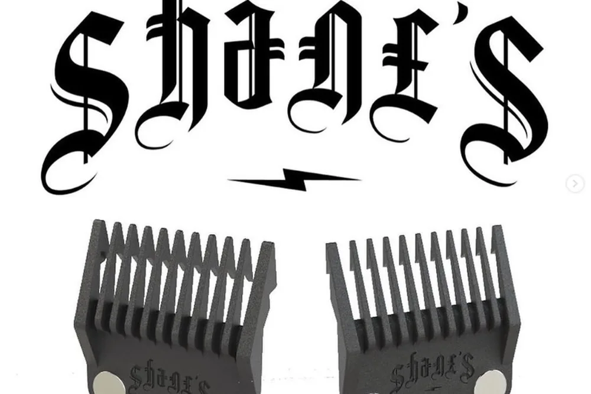

Mechanical · Electrical · Robotics
I'm Maxwell Goldenson. I design precision mechanisms, custom PCBs, and the firmware between them.
Dual-degree BSME / BSEE at CU Boulder, building commercially deployed hardware at Brewbird and running Switchback, an AI assistant that works over SMS and satellite.
Real hardware, built and validated — from novel sensors and custom PCBs to machines that outrun their commercial equivalents.
A Raspberry Pi bench node that gives an AI agent real instruments — logic-analyzer capture, signal measurement, ESP32 compile/flash, serial — as 24 MCP tools. The agent writes firmware, flashes, measures, and revises until machine-checked pass/fail criteria are met.

A novel position sensor designed from first principles when nothing on the market fit — ±10 µm resolution for under $5, validated on a custom metrology fixture and deployed at Brewbird.

A custom PCB that logs 10,000+ samples/sec for days without dropping data — a lockless dual-core ring-buffer architecture built to catch failures no bench instrument could see.

Award-winning smart serving tongs. As electronics lead I designed the full stack: custom ESP32-S3 PCB, 0.1° hinge encoder, IMU wake circuit, and a 30-day battery power budget.

Five major revisions from magnetic joints that failed to a machine that outprints commercial printers — including a hand-machined copper heater block with 2–3× the stock flow rate.

As Technical Captain of a 25-person team: a low-hysteresis belt-driven arm, pivot-routed wiring validated to 10,000 torsional cycles, FEA-lightweighted gears — Curie Division Finalists.
Field-Oriented Control implemented from first principles — Clarke/Park transforms derived by hand, SVPWM verified on a scope, and d/q current loops tuned on real BLDC hardware.

A dynamics-first design where every gram is justified: the CNC-machined truss gantry weighs 94 g with rail and carriages — prototyped in plastic, then cut from aluminum. The rest of the machine lives in full CAD.

Qualitative feedback from a working barber, translated into engineering requirements and a manufacturable design — roughly 500 units produced and sold commercially.
Click a skill to highlight the projects that prove it.
Shipping hardware in production, and leading teams that build under deadline.
I'm an engineer who works at the seam where mechanisms, electronics, and firmware meet — the place where most hardware problems actually live. Pursuing dual degrees in Mechanical and Electrical Engineering at CU Boulder lets me own that seam end to end.
At Brewbird, I've touched every layer of a commercially deployed smart coffee machine: redesigning load-bearing mechanisms, inventing encoder technology that didn't exist on the market, and building the automated test fixtures that catch failures before customers do. I gravitate toward problems that don't have off-the-shelf solutions.
My personal projects run on the same fuel: a delta 3D printer iterated through five revisions until it outran commercial machines, a sub-$5 encoder accurate to ±10 µm, smart tongs with a custom PCB in the handle, and a from-scratch FOC motor controller built purely to eliminate a black box. Lately that fuel also powers software: I founded Switchback, an AI assistant for the backcountry that works over SMS and satellite, and built an AI hardware-in-the-loop rig that lets an agent flash and measure real embedded hardware.
Outside the lab I've led and mentored a 25-person competitive robotics team, competed at the FRC national level, and built everything from electric skateboards to onewheel clones. I believe the best engineers build things — and then iterate until they actually work.